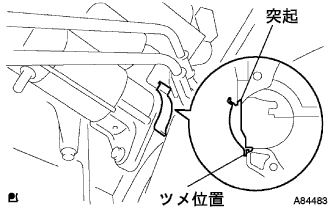

Starter ASSY installation |
| 1. Starter ASSY installation |
Attach the starter ASSY with two bolts.
Connect the connector.
Attach 30 terminals with nuts.
Close the terminal kyatsup.
| 2. Fly Wheel Housing Side Cover Mounting |
|  |
The protrusion is completely inserted, and the protrusion is inserted in the oil pan while pressing the protrusions along the cylindest.
| 3. Engine Anda cover LH installation |
With two screws and two bolts, install the engine undercover LH.
| 4. Engine Anda cover RH installation |
With two screws and two bolts, install the engine undercover RH.
Tighten the nut.
| 5. Air cleaner ASSY installation |
With four bolts, install the air cleaner case, the No. 1 air cleanine rets and the air clenine Retsu NO.2.
Attach the air cleaner fillyer.
Attach the air cleaner kyatsu and the No. 1 air cleaner hose.
| 6. Battery minor Star Mounting installation |